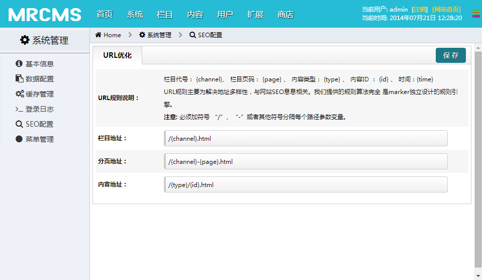
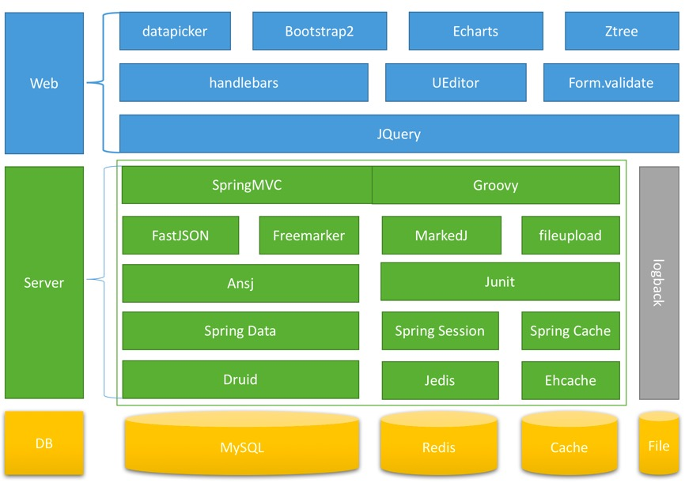

MRCMS 简介
mrcms是一款基于Java语言开发的内容管理系统，采用自定义的模板化语言解决快速建站问题。
MRCMS 是一款开源免费的内容管理系统。系统采用Spring为核心，支持页面静态化、页面国际化、文件上传、富文本编辑、Markdown、SEO优化、站内统计、主题、前后端分离、插件等功能。

项目背景
在开放、自由的中国互联网中，CMS领域做的公司或者个人很多，其中使用PHP、ASP、JSP等语言开发的为主流语言。PHP、ASP、JSP优点在于他们的动态执行代码。这里我们就说说JSP，每次更新都要编译为class字节码，可能有时候还会出现问题，而且面向过程开发，维护性差。受到目前主流的MVC开发模式影响，那我们可以使用Servlet+JSP来实现啊，不错，我们是这样做的！但是后台的开发效率要提高，这里我们选择了SpringMVC作为后台的框架。我们要做的就是颠覆，什么呢？ ”No JSP！“，在项目的架构中，不使用JSP，我们同样达到了在线实时动态扩展功能，而不必重启服务器带来的时间成本。（更多项目历史性资料登录官方网站浏览）
技术设计如下：
- 【持久层】Spring Data作为数据访问接口。
- 【表现层】采用SpringMVC实现了视图与数据分离，并集成freemarker、FastJson。
- 【Web前端】HTML5、CSS3、Ajax、JQuery、UEditor、Echart、Handlebars、fontawesome、Bootstrap等三方插件。
- 【性能优化】采用EHCache作为数据高速缓存，使用Druid作为数据库连接池，多线程处理技术，提高系统响应性能。
- 【扩展性】采用与Java无缝集成Groovy动态脚本语言实现动态添加，分发器、过滤器、标签、内容模型等模块。
- 【安全性】集成了各种加密技术MD5、Base64、DES等、利用Spring AOP功能拦截用户后台登录，Session生命周期30分钟，防范Cookies欺骗，防范XSS攻击。 *【边缘技术】 URL规则引擎、跨平台、 Nginx集成、纯真IP数据库、ansj(中文分词)、模块热部署、FileUpload、主题等等
架构图

运行环境
服务器(经过测试的)： window server(Jre6/tomcat6/mysql5) Linux(openjdk6/tomcat7/mysql5) （如果有必要，同样可以搭建Nginx服务器做反向代理，MRCMS支持获取用户真实IP地址）
在你使用源码时，各种报错原因：
- maven环境问题
- weixinapi.jar 可以pom依赖配置可以删除，因为MRCMS没有完全集成微信功能。
- mysql数据库驱动没有，建议放入tomcat lib目录